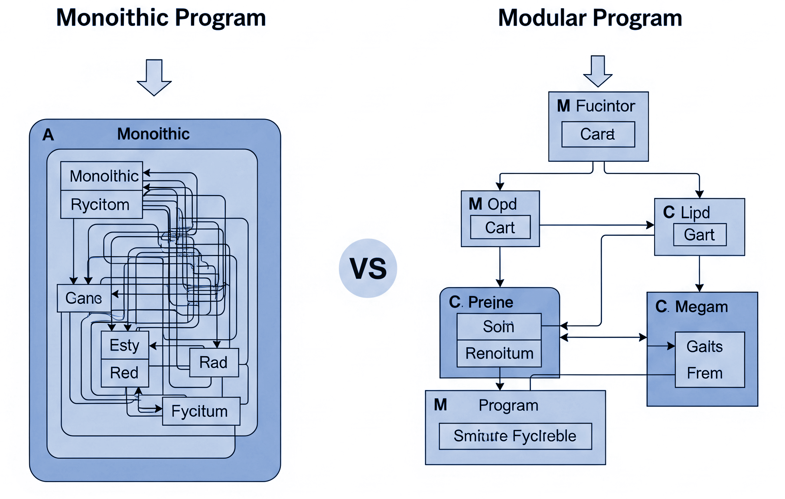
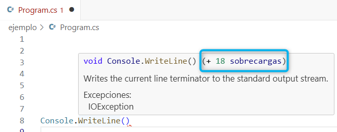
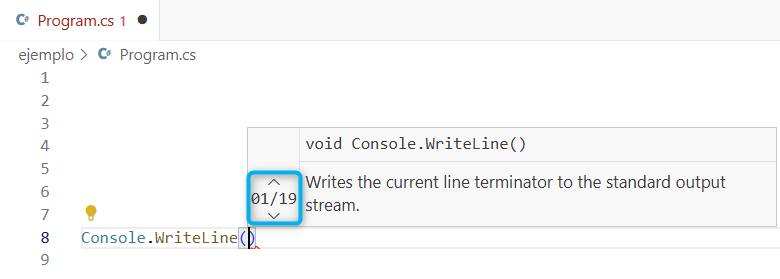
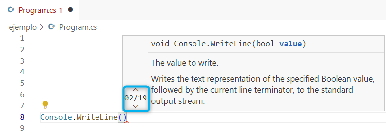

Descargar estos apunte en pdf o html
Los primeros programas eran monolíticos con instrucciones de ruptura y salto tanto condicional como incondicional del tipo GoTo o GoSub.

Problemáticas de los programas monolíticos
Lo que buscamos
Enlaces
Durante la década de los 70 diferentes autores como Stevens, Myers y Constantine, 1974 y Yourdon y Constantine, 1979 definieron las bases de la PE (programación estructurada). Esta, definió las bases de cómo modularizar el código, las cuales se usaron hasta principios de los 90 donde se empezó a popularizar la POO (Programación Orientada a Objetos). No obstante, estos principios estarán también vigentes en la POO y por tanto deberemos de conocerlos.
Módulo o (Subprograma, Subrutina): Parte de un programa que realiza una tarea concreta mediante una serie de instrucciones.
Lo simbolizaremos mediante una caja.
Modularizar: Dividir una tarea o módulo en otros sub-módulos.
Transferencia de control: Cuando un módulo llama a un sub-módulo para realizar parte de su tarea.
Módulo principal o (main): Módulo que controla al resto.
En el siguiente diagrama estamos simbolizando una modularización, donde el módulo principal será el de más arriba y lo simbolizaremos por una línea doble. Para realizar su tarea hace una transferencia de control a los 3 sub-módulos inferiores en orden de izquierda a derecha. A su vez el sub-módulo 2 llama transfiere el control a los sub-módulos 4 y 5 respectivamente para realizar su tarea y tiene el sub-módulo 5 en común con el sub-módulo 3. Generándose así una estructura jerárquica.
Grado de entrada o (fan-in): El número de módulos que usan otro módulo.
En el diagrama de ejemplo serían las flechas que llegan. Así pues, el sub-módulo 5 tiene fan-in = 2
Grado de salida o (fan-out): El número de módulos subordinados a otro. Debería ser el mínimo necesario para realizar la tarea.
En el diagrama de ejemplo serían las líneas que salen. Así pues, el main tiene fan-out = 3, generándose así una dependencia de sus 3 sub-módulos.
Visibilidad o (Scope): El conjunto de módulos o componentes que pueden ser usados por otro.
Cohesión:
Acoplamiento:
Procedimientos: No devuelven ningún valor asociado a su nombre y son el resultado de la división de un módulo más grande que agrupa sentencias relacionadas en una subrutina.
Funciones: Retornan al módulo llamador un valor asociado a su nombre.
Resumen
Definiciones conceptuales de parámetros...
Formales
La forma en que se comunican el subprograma y el módulo que lo llama.
static double Pow(double x, double y) // Parámetro Formal
{
...
}
Reales o Actuales
Podemos decir que es un valor concreto en un momento de la ejecución de los parámetros formales.
Pow(2d, 10d); // Parámetro Real o Actual
Tipos de parámetros según el flujo de datos:
class Tipo
{
public static tipoDevuelto IdentificadorMétodo(parámetrosFormales)
{
// Cuerpo del método…
return variableDelTipoDevuelto; // Devuelve una copia
}
}
Al ser público el identificador del método irá en PascalCasing y para los parámetros formales usaremos camelCasing.
Si se hace fuera de la clase donde se define:
tipoDevuelto idVariable = Tipo.IdentificadorMétodo(parámetrosReales);
(Profundizaremos en ellos más adelante al ver POO)
class Fecha
{
public static bool EsBisiesto(ushort año)
{
return año % 4 == 0 && (año % 100 != 0 || año % 400 == 0);
}
}
public class Principal
{
public static void Main()
{
string salida = (Fecha.EsBisiesto(2008) ? "Es" : "No es") + " bisiesto";
Console.WriteLine(salida);
}
}
Si se hace dentro de la clase donde se define:
tipoDevuelto idVariable = IdentificadorMétodo(parámetrosReales);
(Son los que usaremos para aprender a modularizar en los primeros programas)
public class Principal
{
static bool EsBisiesto(ushort año)
{
return año % 4 == 0 && (año % 100 != 0 || año % 400 == 0);
}
public static void Main()
{
string salida = (EsBisiesto(2008) ? "Es" : "No es") + " bisiesto";
Console.WriteLine(salida);
}
}
Métodos y funciones de nivel superior (top-level) y métodos con cuerpo de expresión
Métodos nivel superior: Don métodos que no están dentro de una clase, sino que se definen directamente en el espacio de nombres. Se introdujeron en C# 9.0 para simplificar la escritura de programas pequeños y scripts.
Métodos con cuerpo de expresión: Son una forma concisa de definir métodos que consisten en una sola expresión. No vamos a profundizar mucho en ellos (usos y significados) hasta el final del curso. Pero son una característica que también podemos encontrar en otros lenguajes como JavaScript, Kotlin, etc.
Podemos simplificar diciendo que son aplicables en aquellos métodos que estén formados por una única expresión o instrucción, independientemente de si se evalúan algo o a void. Eliminaremos las llaves y el return de la definición del método y usaremos el operador => para indicar a que se evalúa el método.
static bool EsBisiesto(ushort año) => año % 4 == 0 && (año % 100 != 0 || año % 400 == 0);
string salida = (EsBisiesto(2008) ? "Es" : "No es") + " bisiesto";
Console.WriteLine(salida);
Tip
Para obtener el código anterior a partir del ejemplo con Main:
Ctrl+. nos ofrecerá la opción de 'Corregir Todo: Convertir en instrucciones de nivel superior'return con una única expresión de EsBisiesto y pulsamos Ctrl+. nos ofrecerá la opción de 'Usar cuerpo de expresiones para función local'.Usaremos para ello el tipo void (vacío) como tipo de retorno.
Su sintaxis suponiendo que es un método estático dentro de una misma clase será:
static void IdProcedimiento(parámetros_formales)
{
// Cuerpo del método
return; // Podemos obviarlo
}
Ejemplo ...
class Datos
{
public static void Muestra(
string nombre,
string apellido,
ushort edad)
{
Console.WriteLine($" Nombre: {nombre}\n" +
$" Apellido: {apellido}\n" +
$" Edad: {edad}");
}
public static void MetodoSinRetorno()
{
// Llamada desde un método de la misma clase.
Muestra("Xusa", "García", 15);
}
}
Haremos la llamada sin asignar el retorno a una variable o sin usarlo en una expresión.
IdProcedimiento(parámetros_reales);
Ejemplo ...
public class Principal
{
public static void Main()
{
Datos.Muestra("Juanjo", "Martínez", 18);
Datos.MetodoSinRetorno();
}
}
Visual Studio y VS Code tienen herramientas para alineación y sangria de parámetros en métodos.
Cuando tenemos pocos parámetros pueden ir en la misma línea de la definición.
static void Muestra(string nombre, string apellido, ushort edad, string dirección)
Si no están así, esto se consigue en el editor, colocándose sobre un parámetro y pulsando Ctrl+. A continuación nos ofrecerá la opción 'Desajustar lista de parámetros → Desajustar todos los parámetros'
Si tenemos 4 o más parámetros, nuestra recomendación es que se haga una sangria de parámetros.
Para ello: Ctrl+. sobre los parámetros y a continuación seleccionar 'Ajustar todos los parámetros → Aplicar sangría a todos los parámetros' obteniendo así...
public static void Muestra(
string nombre,
string apellido,
ushort edad,
string dirección)
De esta forma será más fácil...
Alt+↑ o Alt+↓ sobre el parámetro.Tab o Shift+TabAdemás, estas opciones también valdrán para realizar ajustar los parámetros de una llamada a un método. De tal manera que si tenemos una llamada a Mustra con parámetros reales como la siguiente:
Muestra("Juanjo", "Martínez", 18, "Calle Falsa, 123")
=> Console.WriteLine($"Nombre: {nombre}, Apellido: {apellido}, Edad: {edad}, Dirección: {dirección}");
Si ahora nos situamos sobre el parámetro real "Juanjo" y pulsamos Ctrl+. nos ofrecerá la opción 'Ajustar todos los parámetros → Aplicar sangría a todos los parámetros' obteniendo así:
Muestra(
"Juanjo",
"Martínez",
18,
"Calle Falsa, 123")
=> Console.WriteLine($"Nombre: {nombre}, Apellido: {apellido}, Edad: {edad}, Dirección: {dirección}");
Si además, volvermos a pulsar Ctrl+. sobre el primer parámetro real, nos ofrecerá 'Agregar el nombre al argumento "..." (incluidos los argumentos finales)' obtendremos así:
Muestra(
nombre: "Juanjo",
apellido: "Martínez",
edad: 18,
dirección: "Calle Falsa, 123");
Tip
Fíjate que podemos indicar el nombre del parámetro real al que corresponde el valor que le pasamos separado por el carácter :. Esto es muy útil cuando tenemos muchos parámetros o son de tipo similar, pues nos ayuda a saber a qué corresponde cada uno de ellos. Además, nos permitirá cambiar el orden de los parámetros reales sin que afecte a la llamada, pues al indicar el nombre del parámetro real, no importa el orden en que se pasen. Esta sintaxis, es muy común en lenguajes como Python, Kotlin o Swift y se denomina "Argumentos nombrados".
🚀 Ampliación opcional:
Veamos cómo definir el ejemplo anterior en otros lenguajes como Python o Kotlin para que puedas reconocer equivalencias con C#.
Python:
def muestra(nombre, apellido, edad, direccion):
print(f"Nombre: {nombre}, Apellido: {apellido}, Edad: {edad}, Dirección: {direccion}")
muestra(nombre="Juanjo", apellido="Martínez", edad=18, direccion="Calle Falsa, 123")
Kotlin:
// En este ejemplo hemos ajustado los parámetros y les hemos aplicado sangría para que se vean mejor.
fun muestra(
nombre: String,
apellido: String,
edad: UShort,
direccion: String) {
println("Nombre: $nombre, Apellido: $apellido, Edad: $edad, Dirección: $direccion")
}
muestra(
nombre = "Juanjo",
apellido = "Guarinos",
edad = 18u,
direccion = "Calle Falsa, 123")
Si no ponemos ningún modificador o cláusula al parámetro formal. El paso será por valor. Por tanto, si es un tipo valor el objeto se duplica en memoria y si pasamos un tipo referencia, se duplicará la referencia al objeto.
public class Ejemplo
{
static void RestaUno(int d) // el parámetro de entrada 'd' deja de existir al finalizar el método.
{
// El parámetro formal con id. 'd' solo existe en este
// ámbito y es una copia en el Heap del tipo valor dato
// se pasó como parámetro real.
--d;
Console.Write(d); // Muestra 4
}
public static void Main()
{
int dato = 5;
// Se pasa una copia de dato por que es un Tipo-valor.
RestaUno(dato);
// Después de la llamada dato sigue valiendo 5 por que lo que se modifica es la copia.
Console.Write(dato); // Muestra 5
}
}
Por lo que podemos decir que int d es un parámetro solo de entrada ya que aunque se modifique internamente en el ámbito del método no afecta al valor de la variable dato en el ámbito de ejecución del método Main. Para que el cambio tenga efecto en el método Main deberíamos devolver el valor modificado y asignarlo a la variable dato. Por lo que el código anterior sería equivalente a:
public class Ejemplo
{
static int RestaUno(int d)
{
--d;
Console.Write(d); // Muestra 4
// Devolvemos una copia de lo que vale d en el Heap
// antes de que se 'destruya'.
return d;
}
public static void Main()
{
int dato = 5;
// Sobrescribimos el Tipo-valor dato con lo que devuelve la función.
dato = RestaUno(dato);
Console.Write(dato); // Muestra 4
}
}
¿Qué sucede si pasamos por valor un tipo-referencia en lugar de un tipo-valor?
En el siguiente ejemplo vamos a ver que pasa usando el tipo referencia básico cadena.
Nota
Puedes profundizar si los tipos valor y referencia en la documentación oficial y su gestión en el Anexo I de ampliación. Aunque, a este nivel, no es necesario que conozcamos la gestión de memoria de los tipos valor y referencia, si no que nos quedemos con el concepto de que los tipos valor se copian y los tipos referencia se copian las referencias al pasarse por valor.
public class Ejemplo
{
static void PonExclamaciones(string t)
{
// t es una copia de la referencia texto.
t = t + "!!!!";
// t referenciará ahora a una cadena nueva que será destruida
// al finalizar este ámbito de ejecución.
}
public static void Main()
{
// texto será una referencia a un objeto cadena.
string texto = "Adios";
// Al pasar por valor hacemos una copia de la referencia.
PonExclamaciones(texto);
Console.Write(texto); // Muestra "Adios" sin las !!!!
}
}
Lo normal es tener un único parámetro de salida, que será el valor que retorna la función. En este caso no necesitamos ningún modificador o cláusula y solo deberemos indicar el tipo de retorno en la declaración del método y usar la cláusula return, como hemos visto en la sintaxis, para devolver el valor o si es una expresión, simplemente evaluarlo como hemos visto en la sintaxis.
Por ejemplo, si queremos definir un método que calcule el ángulo en radianes entre dos puntos en un plano cartesiano, podríamos hacerlo así:
static double AnguloEnRadianes(double x1, double y1, double x2, double y2)
{
// Definir una variable local en ocasiones nos ayuda a depurar.
double angulo = Math.Atan2(y2 - y1, x2 - x1);
return angulo;
}
o también, simplificarlo con cuerpo de expresión ya que podemos reducirlo a una única expresión. Recuerda, que si para obtener el valor de retorno, necesitamos realizar más de una operación, deberemos usar el cuerpo del método con llaves y la cláusula return obligatoriamente.
static double AnguloEnRadianes(double x1, double y1, double x2, double y2) => Math.Atan2(y2 - y1, x2 - x1);
Pero, cómo retornar más de un valor, o varios valores de salida?. Esta opción, no va a ser muy común, puesto que si retornamos más de un valor posiblemente el módulo haga más de una cosa y por tanto tenga baja cohesión. Si esto sucede, deberíamos dividir el módulo en sub-módulos más pequeños que hagan una sola cosa, retornando un único valor.
Sin embargo, en ocasiones una "operación atómica" puede requerir más de un valor de salida. En este caso, la opción más recomendable es usar tuplas.
Enlace
Formalmente una tupla, sería un objeto que contiene otros objetos ordenados en su interior (a1, a2, a3, a4, ..., an) que pueden ser o no de diferente tipo.
Son tipos valor, esto es, se almacenan en el Heap y se copian al pasarse o al retornarse de un método o al asignase a una variable como el resto de tipos primitivos int, double,... (excepto string).
Ejemplo 1:
Por ejemplo, una coordenada 2D de 2 valores reales (x, y) como (2.5d, 6d) es una tupla de dobles. Podemos definirla de tres maneras:
// Sin indicar un identificador para los valores de la tupla y después acceder usando Item1, Item2, etc.
(double, double) punto1 = (2.5d, 6d);
Console.WriteLine($"Punto: ({punto1.Item1}, {punto1.Item2})");
// Indicando un identificador para los valores de la tupla y después acceder usando el identificador.
(double x, double y) punto2 = (2.5d, 6d);
Console.WriteLine($"Punto: ({punto2.x}, {punto2.y})");
// Sin necesidad de indicar un identificador para la tupla, pero asignando los valores a variables individuales.
// Aunque ahora no tenga mucho sentido, es útil cuando el tipo tupla es el retorno de un método.
(double x, double y) = (2.5d, 6d);
Console.WriteLine($"Punto: ({x}, {y})");
Ejemplo 2:
Supongamos que queremos definir un tipo tupla que represente la demografía de una ciudad con el nombre de la ciudad, el número de habitantes y el área en km². Podríamos definirlo así:
(string ciudad, int habitantes, double area) demografia = ("Alicante", 337482, 201.26);
Console.WriteLine($"Ciudad: {demografia.ciudad}");
Console.WriteLine($"Habitantes: {demografia.habitantes}");
Console.WriteLine($"Área: {demografia.area} km²");
Continuando con la definición de parámetros de salida a través de tuplas. Supongamos que queremos definir un método similar al anterior, pero que nos retorne la dirección del segmento definido por los dos puntos (x1, y1) y (x2, y2) en forma de tupla de dos valores reales (sen, cos). Además, los puntos también los vamos a pasar como tupla. Para ello, podemos definir el método de la siguiente manera:
(double sen, double cos) Direccion((double x, double y) p1, (double x, double y) p2)
Como vemos, el tipo de retorno es (double sen, double cos) una tupla con dos valores reales que serán las dos variables de salida. El nombre o identificador de los valores de la tupla es opcional, pero deberemos indicarlo para que el código sea más legible y auto-documentado.
public class Ejemplo
{
static (double sen, double cos) Direccion((double x, double y) p1, (double x, double y) p2)
{
double anguloRad = Math.Atan2(p2.y - p1.y, p2.x - p1.x);
return (Math.Sin(anguloRad), Math.Cos(anguloRad));
}
public static void Main()
{
// Fíjate que podemos usar la tupla directamente en la declaración de la variable
// sin necesidad de usar un identificador.
(double sen, double cos) = Direccion((x:2.5d, y:6d), (x:4.5d, y:8d));
// Después podemos acceder a los valores de la tupla por su nombre.
Console.WriteLine($"Sen = {sen:F3}"); // Mostra Sen = 0.707
Console.WriteLine($"Cos = {cos:F3}"); // Mostra Cos = 0.707
}
}
Ejeplo de ejecución:
Sen = 0.707 Cos = 0.707
🚀 Ampliación opcional:
Veamos cómo definir el ejemplo anterior en otros lenguajes como Python o Kotlin para que puedas reconocer equivalencias con C#.
Python:
import math
# Fíjate que también podemos definir tuplas de forma
# muy similar a como hace C#
def direccion(p1, p2):
angulo_rad = math.atan2(p2[1] - p1[1], p2[0] - p1[0])
return (math.sin(angulo_rad), math.cos(angulo_rad))
sen, cos = direccion((2.5, 6.0), (4.5, 8.0))
print(f"Sen = {sen:.3f}") # Muestra Sen = 0.707
print(f"Cos = {cos:.3f}") # Muestra Cos = 0.707
Kotlin:
import kotlin.math.*
// En Kotlin también es similar pero no tenemos un tipo tupla indeterminado
// sino que tenemos que indicar el número de elementos y si son dos
// utilizaremos Pair<Double, Double>
fun direccion(p1: Pair<Double, Double>, p2: Pair<Double, Double>): Pair<Double, Double> {
val anguloRad = atan2(p2.second - p1.second, p2.first - p1.first)
return Pair(sin(anguloRad), cos(anguloRad))
}
fun main() {
val (sen, cos) = direccion(2.5 to 6.0, 4.5 to 8.0)
// El resto del código no cambia.
println("Sen = %.3f".format(sen)) // Muestra Sen = 0.707
println("Cos = %.3f".format(cos)) // Muestra Cos = 0.707
}
Como puedes ver una vez vista una estructura, podemos encontrar otras más o menos equivalentes en otros lenguajes y si no sucede, siempre podemos definir dos métodos, uno que retorne el seno y otro el coseno.
out Existen otras formas de pasar parámetros a los métodos a través del uso de modificadores o cláusulas. Su uso no es muy común, pero puedes profundizar en ellas en el Anexo I de ampliación al final del tema. Una de ellas es la cláusula out que nos permite definir un caso especial de parámetros de salida.
Veamosló a través del método TryParse de la clase Int32 definido en las BCL, de la que podemos encontrar su equivalente para el resto de tipos primitivos como Double.TryParse, Int64.TryParse, etc.
Este método nos permite intentar convertir una cadena a un entero pero... analicemos su interface:
public static bool TryParse(string? s, out int result);
string? s que es una cadena que queremos convertir a entero.out int result que es el entero resultante de la conversión si se ha podido realizar. Es de salida porque porque el tipo está modificado con la cláusula out lo que nos indica que el valor de este parámetro se modificará dentro del método y no es necesario inicializarlo antes de la llamada.En este caso el parámetro de salida out int result está subordinado al parámetro de salida bool y a que su valor sea true ya que si es false el valor de result no tendrá sentido. Por tanto, no tendría sentido devolverlo en una tupla porque cuando se definió el método las tuplas no existían y además, como hemos comentado, result está subordinado al valor del bool de salida y con una tupla no podríamos expresar correctamente esta relación de dependencia.
Veamos un ejemplo simple de uso a través de un programa simple que lea un valor entero y que filtre la entada para que el valor introducido sea un número entero entre 1 y 10. Si no es así, volverá a pedir el valor hasta que se introduzca un valor correcto que se acabará mostrando por consola.
bool esNumeroValido;
int numero;
do
{
Console.Write("Introduce un número entero entre 1 y 10: ");
string entrada = Console.ReadLine();
esNumeroValido = int.TryParse(entrada, out numero) && numero is >= 1 and <= 10;
if (!esNumeroValido)
Console.WriteLine($"La entrada {entrada} no es válida. Por favor, introduce un número entero entre 1 y 10.");
} while (!esNumeroValido);
Console.WriteLine($"Número válido introducido: {numero}");
Fíjate en el siguiente ejemplo de ejecución, que si no introducimos nada o introducimos una cadena ya no se generará un error de ejecución, sino que se mostrará un mensaje de error y volverá a pedir el valor hasta que se introduzca un número entero válido entre 1 y 10. Número será rellenado por TryParse si se evalúa a true y si se evalúa a false no se llegará a evaluar la segunda parte de la expresión numero is >= 1 and <= 10 donde comprobamos que el número esté en el rango de 1 a 10.
Introduce un número entero entre 1 y 10: hola La entrada hola no es válida. Por favor, introduce un número entero entre 1 y 10. Introduce un número entero entre 1 y 10: 34,6 La entrada 34,6 no es válida. Por favor, introduce un número entero entre 1 y 10. Introduce un número entero entre 1 y 10: 22 La entrada 22 no es válida. Por favor, introduce un número entero entre 1 y 10. Introduce un número entero entre 1 y 10: 5 Número válido introducido: 5
float PorcentajeDeDescuento(double tarifa, double precio) {...} 👍float Porcentaje(double tarifa, double precio) {...} Es ambiguo 👎public static double Distancia(Punto2D p1, Punto2D p2) {...} 👍public static double CalculaDistanciaEntrePuntos(Punto2D p1, Punto2D p2) {...} Redundante 👎Usaremos nombres descriptivos para los parámetros formales.
Aunque, comentamos que no debíamos utilizar contracciones. En determinados contextos podremos usar una inicial para el nombre del parámetro formal, pues no hay posibilidad de confusión, ni ambigüedad.
double Distancia(Punto2D i, Punto2D j) {...} i, j son ids. usados para índices 👎double Distancia(Punto2D punto1, Punto2D punto2) {...} 👍double Distancia(Punto2D p1, Punto2D p2) {...} 👍👍El pasar los parámetros sin agrupar en los módulos o funciones básicas o atómicas nos proporcionará mayor reusabilidad. Ya que evitaremos acoplamientos y dependencias de tipos complejos.
📌 Nota: Esto es difícil de valorar y objeto de discusión, porque lo normal es hacer lo contrário.
En el siguiente ejemplo. Es más posible que pueda usar el método en más sitios, si utilizo coordenadas puesto que no necesito conocer la clase Punto2D.
double Distancia(Punto2D p1, Punto2D p2){...} 👍double Distancia((double x, double y) p1, (double x, double y) p2){...} 👍👍double Distancia(double x1, double y1, double x2, double y2){...} 👍👍Lo normal es retornar un único valor. Por tanto, el nombre del método deberá indicar lo que retorna.
double AnguloEnRadianes(double x1, double y1, double x2, double y2) 👍Si tenemos más de un parámetro de salida:
Podemos usar tuplas 👍👍.
(double sen, double cos) Direccion(double x1, double y1, double x2, double y2) {...}
(double sen, double cos) Direccion((double x, double y) p1, (double x, double y) p2) {...}
🎓 Caso de estudio:
Vamos a volver sobre el programa de resolución de ecuaciones de segundo grado que vimos en temas anteriores y vamos a definir un método que nos permita resolver ecuaciones de segundo grado. Recordemos que una ecuación de segundo grado es aquella que tiene la forma:
Donde si el discriminante es mayor que 0 tiene 2 soluciones. Si es igual a 0 tiene 1 solución y si es menor que cero no tiene soluciones reales.
Lo principal en este caso es definir el interfaz del método que nos permita resolver la ecuación de segundo grado. Para ello, vamos a definir un método que reciba los coeficientes a, b y c de la ecuación. Pero, ¿Qué tipo de retorno debe tener el método?, ¿Cómo vamos a representar las soluciones?.
Veamos una posible solución donde usamos una tupla para representar el número de soluciones y las soluciones en sí. El método, pues, devolverá una tupla con el número de soluciones y las soluciones si las hay. Si no hay soluciones, las soluciones serán null para que no se puedan usar. Con todo esto, la implementación del método podría ser la siguiente...
static (int soluciones, double? x1, double? x2)
ResuelveEcuacionSegundoGrado(double a, double b, double c)
{
Debug.Assert(a > 1e-5, "El coeficiente 'a' debe ser distinto de cero");
double discriminante = b * b - 4 * a * c;
(int soluciones, double? x1, double? x2) resultado;
if (discriminante < 0)
{
resultado = (0, null, null);
}
else if (discriminante == 0)
{
double x = -b / (2 * a);
resultado = (1, x, null);
}
else
{
double sqrtDiscriminante = Math.Sqrt(discriminante);
double x1 = (-b + sqrtDiscriminante) / (2 * a);
double x2 = (-b - sqrtDiscriminante) / (2 * a);
resultado = (2, x1, x2);
}
return resultado;
}
Con lo visto durante el tema, podemos usar el método de la siguiente manera. Donde, podemos ver que la llamada al método queda clara y auto-documentada, además su uso es sencillo sin necesidad de definir tipos complejos para usarlo.
public static void Main()
{
(int soluciones, double? x1, double? x2) = ResuelveEcuacionSegundoGrado(a:1, b:-3, c:2);
string salida = soluciones switch
{
0 => "La ecuación no tiene soluciones reales.",
1 => $"La ecuación tiene una solución real: x = {x1}",
_ => $"La ecuación tiene dos soluciones reales: x1 = {x1}, x2 = {x2}"
};
Console.WriteLine(salida);
}
🎓 Caso de estudio:
Se propone hacer un una versión extendida del programa de piedra-papel-tijera.
En este versión se jugarán rondas contra la máquina de 1 a 4 jugadores. De tal manera que el programa nos pedirá el número de jugadores para la ronda de juego y posteriormente para cada jugador, indicará que jugador juega y le pedirá a este una jugada.
Acto seguido, la máquina hará una jugada aleatoria y nos mostrará el resultado del juego de ese jugador en esa ronda.
Cuando hayan jugado todos los jugadores de la ronda, la máquina nos pedirá que pulsemos una tecla para jugar otra ronda o ESC para salir.
📌 Nota: Para repasar algunas de las estructuras vistas en el anterior tema. Vamos ha hacer que el ordenador filtre las entradas da datos del usuario, nos deberá indicar si es incorrecta, y la volverá a pedir en tal caso.
Una posible descomposición del problema en módulos sería la siguiente...
Fíjate que cada módulo solo hace una cosa.
Ejemplo de ejecución:
Introduce cuantos jugadores van a participar (1 a 4): 6
6 no es correcto. Debe ser un valor entre 1 y 4.
Introduce cuantos jugadores van a participar (1 a 4): 2
Jugando Jugador_1 ...
Introduce tú jugada (PIEDRA, PAPEL, TIJERA): PAPEL
El ordenador ha jugado PAPEL
Jugador_1 ha jugado PAPEL
Empate
Jugando Jugador_2 ...
Introduce tú jugada (PIEDRA, PAPEL, TIJERA): PAPEL
El ordenador ha jugado TIJERA
Jugador_2 ha jugado PAPEL
El ordenador gana
¡¡¡ FIN PARTIDA !!!.
Pulsa una tecla para jugar otra ronda. ESC para salir.
Puedes descargar el código fuente del ejemplo en el siguiente enlace.
📌 Nota: Aquellos módulos a los que se les pasa el control más de una vez en un bucle, lo indicaremos en la flecha con una etiqueta.
Vamos seguir la modularización propuesta teniendo en cuenta que:
Partiremos del siguiente esqueleto del programa. Fíjate que hemos definido 3 constantes de texto que nos serán de utilidad durante la implementación del programa, al tener el modificador const podrán ser usadas por cualquier método estático de la clase.
EjemploModularizacion junto con el Main().
public class EjemploModularizacion
{
const string PIEDRA = "PIEDRA";
const string PAPEL = "PAPEL";
const string TIJERA = "TIJERA";
public static void Main()
{
}
}
Como hemos comentado empezamos por los módulos de Nivel 3 definiendo su interfaz.
[Pide Jugada a Jugador N] → static string PideJugada(string jugador)
Notemos que la signatura completa, incluido el identificador, me dice lo que va ha hacer:
PideJugadastring jugador Nombre del jugador al que le voy a pedir la jugada.string Texto con la jugada de ese jugador "PIEDRA", "PAPEL" o "TIJERA".static string PideJugada(string jugador)
{
// Jugada a retornar por el jugador.
string jugada;
// Flag que me indicará si el Jugador N ha realizado una jugada correcta.
bool jugadaCorrecta;
// Establezco el texto de las jugadas para no tener que repetirlo.
string opciones = $"{PIEDRA}, {PAPEL}, {TIJERA}";
// Bucle que me irá pidiendo una jugada mientras no sea correcta.
do
{
// Indico el jugador que tiene que jugar y que me llega como parámetro.
Console.WriteLine($"Jugando {jugador} ...");
Console.Write($"\tIntroduce tú jugada ({opciones}): ");
jugada = Console.ReadLine()!.ToUpper();
jugadaCorrecta = jugada == PIEDRA || jugada == PAPEL || jugada == TIJERA;
// Si voy a volver a pedir la entrada le indico al jugador su error.
if (!jugadaCorrecta)
Console.WriteLine($"\t{jugada} no es una jugada correcta. Debe ser {opciones}");
} while (!jugadaCorrecta);
return jugada;
}
[Genera Jugada Máquina] → static string GeneraJugadaMaquina()
Notemos que la signatura completa, incluido el identificador, me dice lo que va ha hacer:
GeneraJugadaMaquinastring Texto con la jugada de la máquina "PIEDRA", "PAPEL" o "TIJERA".static string GeneraJugadaMaquina()
{
// Habrá muchas formas correctas de implementarlo. Pero por usar la nueva sintaxis de C#8
// Podemos retornar el resultado de evaluar una expresión switch.
return new Random().Next(0, 3) switch
{
0 => PIEDRA,
1 => PAPEL,
2 => TIJERA,
_ => "Jugada no válida" // Este caso no se podrá dar, aquí deberíamos generar un error.
};
}
[Obtén Resultado Jugadas] → static string Resultado(string jugadaUsuario, string jugadaMaquina)
Notemos que la signatura completa, incluido el identificador, me dice lo que va ha hacer:
Resultado string jugadaUsuario Texto con la jugada del usuario.string jugadaMaquina Texto con la jugada de la máquina.string Texto el resultado de la jugada a mostrar al usuario "Empate", "He ganado" o "He perdido".static string Resultado(string jugadaUsuario, string jugadaMaquina)
{
string resultado;
if (jugadaMaquina == jugadaUsuario)
{
resultado = "Empate";
}
else switch (jugadaMaquina)
{
case PIEDRA when jugadaUsuario == TIJERA:
case PAPEL when jugadaUsuario == PIEDRA:
case TIJERA when jugadaUsuario == PAPEL:
resultado = "El ordenador gana";
break;
default:
resultado = "El jugador gana";
break;
}
return resultado;
}
[Muestra Resultado Jugadas] → static void WriteLine(...)
No se sustanciará en un método pues mostrar por consola ya está definido en System.Console
Como hemos comentado empezamos por el módulos de Nivel 2 definiendo su interfaz.
[Pide Número Jugadores] → static int PideNumeroJugadores()
Notemos que la signatura completa, incluido el identificador, me dice lo que va ha hacer:
PideNumeroJugadoresint Número de jugadores que disputan esa ronda introducida por el usuario.// El esquema algorítmico del método es análogo al de PideJugada
static int PideNumeroJugadores()
{
bool numeroCorrecto;
int jugadores;
do
{
Console.Write("Introduce cuantos jugadores van a participar (1 a 4): ");
string entrada = Console.ReadLine() ?? "1";
numeroCorrecto = int.TryParse(entrada, out jugadores);
numeroCorrecto = numeroCorrecto && jugadores >= 1 && jugadores <= 4;
if (!numeroCorrecto)
Console.WriteLine($"{entrada} no es correcto. Debe ser un valor entre 1 y 4.");
} while (!numeroCorrecto);
return jugadores;
}
[Juega Jugador N] → static void Juega(string jugador)
Notemos que la signatura completa, incluido el identificador, me dice lo que va ha hacer:
Juegastring jugador Nombre del jugador que va a jugar.static void Juega(string jugador)
{
// Juega transfiere el control a los 4 módulos en los que lo hemos subdividido
// en el orden correcto (Izquierda a Derecha)
// 1.- Pide Jugada a jugador N
// 2.- Renera Jugada Máquina
// 3.- Obtén Resultado Jugadas
// 4.- Muestra el resultado.
// Al modularizar el módulo queda legible, autodocumentado y ocupa menos de 10 líneas.
string jugadaUsuario = PideJugada(jugador);
string jugadaMaquina = GeneraJugadaMaquina();
string resultado = Resultado(jugadaUsuario, jugadaMaquina);
Console.WriteLine($"\tEl ordenador ha jugado {jugadaMaquina}\n"
+ $"\t{jugador} ha jugado {jugadaUsuario}\n"
+ $"\t{resultado}\n");
}
Por último definimos los módulos del Nivel 1 y el Nivel 0 donde estará el módulo principal o Main.
[Juega Ronda] → static void JuegaRonda()
Notemos que la signatura completa, incluido el identificador, me dice lo que va ha hacer:
JuegaRondastatic void JuegaRonda()
{
// JuegaRonda transfiere el control a los 2 módulos en los que lo hemos subdividido...
// 1.- Pide Numero Jugadores
// 2.- Juega Jugador N
int jugadores = PideNumeroJugadores();
for (int i = 0; i < jugadores; i++)
Juega($"Jugador_{i+1}");
}
[Principal] → public static void Main()
Main Por la especificación del lenguaje CSharppublic static void Main()
{
do
{
Console.Clear();
// Podríamos pensar que si incluimos el código de JuegaRonda aquí dentro tampoco
// quedaría un método muy complejo.
// Pero tendríamos un bucle dentro de un bucle y eso nos está indicando que ese
// segundo bucle está haciendo un proceso que a su ves se puede encapsular en
// un módulo.
JuegaRonda();
Console.WriteLine("¡¡¡ FIN PARTIDA !!!.");
Console.WriteLine("Pulsa una tecla para jugar otra ronda. ESC para salir.");
} while (Console.ReadKey().Key != ConsoleKey.Escape);
}
Aunque es una característica de la programación orientada a objetos, también podemos encontrarla en la programación estructurada. La sobrecarga de métodos o polimorfismo funcional es una característica que nos permite definir varios métodos con el mismo nombre o identificador pero con diferentes parámetros.
Esto es muy común con muchas de las funciones que ya hemos visto en las BCL, como por ejemplo Console.WriteLine(...) que tiene varias versiones con diferentes parámetros. En VSCode si situamos el ratón sobre el método nos mostrará un tooltip donde nos indicará el número de sobrecargas como se aprecia en la imagen de ejemplo.

Es más si escribimos Console.WriteLine( y pulsamos Ctrl + Shift + Espacio nos mostrará un listado de las sobrecargas disponibles, y con las fechas de ⬆️ y ⬇️ podremos navegar por las diferentes sobrecargas.


Para C#, dos métodos se consideran sobrecargados si:
Ejemplo de sobrecarga:
static class EjemploSobrecarga
{
public static void MetodoA(int x) => Console.WriteLine(x);
public static void MetodoA(double x) => Console.WriteLine(x);
public static int MetodoA(int x, int y) => x + y;
public static double MetodoA(string x) => double.Parse(x);
}
public class MainClass
{
public static void Main()
{
EjemploSobrecarga.MetodoA(5); // Llama a MetodoA(int x)
EjemploSobrecarga.MetodoA(3.14); // Llama a MetodoA(double x)
Console.WriteLine(EjemploSobrecarga.MetodoA(2, 3)); // Llama a MetodoA(int x, int y) y muestra 5
Console.WriteLine(EjemploSobrecarga.MetodoA("4.5")); // Llama a MetodoA(string x) y muestra 4.5
}
}
Una llamada a un método debe proporcionar los argumentos reales para todos los parámetros, sin embargo se pueden omitir aquellos argumentos de parámetros opcionales.
Los parámetros opcionales se definen al final de la lista de parámetros, después de los parámetros necesarios. Si el autor de la llamada proporciona un argumento para algún parámetro de una sucesión de parámetros opcionales, debe proporcionar argumentos para todos los parámetros opcionales anteriores o en su lugar indicar el identificador del parámetro formal.
Ejemplo de parametrización opcional:
public static class Ejemplo
{
static void Metodo(
string cadenaRequerida, int enteroRequerido,
// No puedo definir ningún opcional antes del último requerido.
string cadenaOpcional = "", int enteroOpcional = 10) =>
Console.WiriteLine($"Cadena requerida: {cadenaRequerida}\nEntero requerido: {enteroRequerido}\n"
+ $"Cadena opcional: {cadenaOpcional}\nEntero opcional: {enteroOpcional}");
public static void Main()
{
// Correcto
Metodo("Cadena obligatoria", 3, "Cadena Opcional", 33);
// Correcto enteroOpcional = 10
Metodo("Cadena obligatoria", 3, "Cadena Opcional");
// Correcto cadenaOpcional = "" y enteroOpcional = 10
Metodo("Cadena obligatoria", 3);
// Si sabemos el nombre del identificador del parámetro en el método...
// Correcto y cadenaOpcional = ""
Metodo("Cadena obligatoria", 3, enteroOpcional: 10);
}
}
Nota
Se pueden definir en multitud de lenguajes como C#, Python, Javascript, Kotlin, etc. Sin embargo, Java no los permite porque tienen inconvenientes:
Por las razones anteriores. No deberíamos usarlos en métodos públicos.
(👁️ fíjate que Microsoft apenas los usa en sus BCL y sí la sobrecarga)
🚀 Ampliación opcional:
Veamos cómo definir el ejemplo anterior de parametrización opcional en otros lenguajes como Python o Kotlin para que puedas reconocer equivalencias con C#.
Python:
def metodo(
cadena_requerida: str, entero_requerido: int,
cadena_opcional: str = "", entero_opcional: int = 10
):
print(f"Cadena requerida: {cadena_requerida}\nEntero requerido: {entero_requerido}\n"
f"Cadena opcional: {cadena_opcional}\nEntero opcional: {entero_opcional}")
# Correcto: Se proporcionan todos los argumentos posicionalmente.
metodo("Cadena obligatoria", 3, "Cadena Opcional", 33)
# Correcto: Se omite el último argumento, 'entero_opcional' tomará su valor por defecto (10).
metodo("Cadena obligatoria", 3, "Cadena Opcional")
# Correcto: Se omiten los dos argumentos opcionales.
metodo("Cadena obligatoria", 3)
# Correcto: Se utilizan argumentos de palabra clave (keyword arguments)
# para especificar un parámetro opcional saltando el anterior.
# 'cadena_opcional' tomará su valor por defecto ("").
metodo("Cadena obligatoria", 3, entero_opcional=10)
Kotlin:
fun metodo(
cadenaRequerida: String, enteroRequerido: Int,
cadenaOpcional: String = "", enteroOpcional: Int = 10
) = println("Cadena requerida: $cadenaRequerida\nEntero requerido: $enteroRequerido\n" +
"Cadena opcional: $cadenaOpcional\nEntero opcional: $enteroOpcional")
fun main() {
// Correcto: Se proporcionan todos los argumentos.
metodo("Cadena obligatoria", 3, "Cadena Opcional", 33)
// Correcto: Se omite el último argumento, 'enteroOpcional' tomará su valor por defecto (10).
metodo("Cadena obligatoria", 3, "Cadena Opcional")
// Correcto: Se omiten los dos argumentos opcionales.
// 'cadenaOpcional' será "" y 'enteroOpcional' será 10.
metodo("Cadena obligatoria", 3)
// Correcto: Se usan argumentos con nombre (named arguments) para especificar un
// parámetro opcional saltando los anteriores. Es idéntico a la sintaxis de C#.
metodo("Cadena obligatoria", 3, enteroOpcional = 10)
}
🎓 Caso de estudio:
Vamos a tratar un ejemplo de como evitar parámetros opcionales en los métodos públicos o en lenguajes que no nos los permitan como Java, a través de C#.
Si recordamos de temas anteriores, definimos una estructura Punto2D que ahora va a tener el método Desplaza con el valor del ángulo a 0 de forma opcional.
public static class Geometria2D
{
public static (double X, double Y) Desplaza(
(double X, double Y) punto,
double distancia,
double anguloGrados = 0.0D)
{
double anguloRadianes = anguloGrados * Math.PI / 180.0;
double nuevoX = punto.X + distancia * Math.Cos(anguloRadianes);
double nuevoY = punto.Y + distancia * Math.Sin(anguloRadianes);
return (nuevoX, nuevoY);
}
}
El método Desplaza nos permite desplazar un punto en el plano cartesiano, con una distancia y un ángulo opcional. Si no se especifica el ángulo, se asume que es 0 grados (desplazamiento horizontal) y podríamos usarlo de la siguiente manera:
public static class Program
{
public static void Main()
{
(double X, double Y) p1 = (X: 2.0, Y: 4.0);
Console.WriteLine($"Punto original: ({p1.X:G2}, {p1.Y:G2})");
(double X, double Y) p2 = Geometria2D.Desplaza(p1, 4.0);
Console.WriteLine($"Punto tras desplazar 4 unidades a °: ({p2.X:G2}, {p2.Y:G2})");
(double X, double Y) p3 = Geometria2D.Desplaza(p1, 3.0, 90.0);
Console.WriteLine($"Punto tras desplazar 3 unidades a 90°: ({p3.X:G2}, {p3.Y:G2})");
}
}
Planteamiento
Cómo deberíamos refactorizar el código anterior usando polimorfismo funcional o sobrecarga y así evitar el uso de parámetros opcionales en el método Desplaza que es público o si no disponemos de ellos en el lenguaje que usamos.
La forma más común sería la siguiente...
public static class Geometria2D
{
private static (double X, double Y) _desplaza(
(double X, double Y) punto,
double distancia,
double anguloGrados)
{
double anguloRadianes = anguloGrados * Math.PI / 180.0;
double nuevoX = punto.X + distancia * Math.Cos(anguloRadianes);
double nuevoY = punto.Y + distancia * Math.Sin(anguloRadianes);
return (nuevoX, nuevoY);
}
public static (double X, double Y) Desplaza(s
(double X, double Y) punto,
double distancia) => _desplaza(punto, distancia, 0.0);
public static (double X, double Y) Desplaza(
(double X, double Y) punto,
double distancia,
double angulo) => _desplaza(punto, distancia, angulo);
}
Enlaces
Al poner el modificador o cláusula in al identificador del parámetro formal. El paso será por referencia, pero no lo podremos modificar dentro del método.
Por tanto, si es un tipo valor será una referencia al mismo objeto en memoria y si pasamos un tipo referencia, se tratará de una referencia a la referencia.
En la llamada al método, deberemos anteponer al parámetro real la cláusula in.
public class Ejemplo
{
static void RestaUno(in int d)
{
// El parámetro formal con id. 'd' es una referencia
// a dato que se pasó como parámetro real.
// Ya no podremos hacer --d; pues dará error.
Console.Write(d); // Muestra 5
} // el parámetro de entrada 'd' deja de existir y por tanto la referencia a dato.
// pero dato sigue existiendo.
public static void Main()
{
int dato = 5;
// Se pasa una referencia a la zona de memoria donde está dato.
// Sabemos que nunca se modificará el valor internamente.
RestaUno(in dato); //Línea 20 anteponer in
Console.Write(dato); // Muestra 5
}
}
Utilizaremos el modificador ref antes del tipo para indicar un paso por referencia.
Igual que in pero podremos modificar el valor del parámetro formal por eso consideramos que es un parámetro que 'entra' con un valor y 'sale' con otro.
⚠️ Deberemos evitarlos en la medida de lo posible, pues dan lugar a efectos laterales y acoplamiento 💀.
En la llamada al método, deberemos anteponer al parámetro real la cláusula ref.
public class Ejemplo
{
static void RestaUno(ref int d)
{
// El parámetro formal con id. 'd' es una referencia
// a dato que se pasó como parámetro real.
--d; // Ahora podemos modificar sin problema el valor del parámetro.
Console.Write(d); // Muestra 4
} // el parámetro de entrada 'd' deja de existir y por tanto la referencia a dato.
// pero dato sigue existiendo.
public static void Main()
{
int dato = 5;
// Se pasa una referencia a la zona de memoria donde está dato.
// El valor podrá modificarse internamente.
RestaUno(ref dato); //Línea 20 anteponer ref
Console.Write(dato); // Muestra 4
}
}
¿Qué sucede si pasamos por referencia un tipo-referencia en lugar de un tipo-Valor?
Veamos que pasa con el ejemplo que usamos en el paso por valor.
public class Ejemplo
{
static void PonExclamaciones(ref string t)
{
// t es una referencia a la referencia texto.
t = t + "!!!!";
// al cambiar ahora t estaremos cambiando el valor de la referencia texto.
}
public static void Main()
{
// texto será una referencia a un objeto cadena.
string texto = "Adios";
// Al pasar por valor hacemos pasaremos una referencia a la referencia.
PonExclamaciones(ref texto);
Console.Write(texto); // Muestra "Adios!"
}
}
Antes de existir el tipo tupla, se utilizaba la palabra reservada out precediendo al tipo para indicar un parámetro de salida.
out. Además, out nos permite declarar el tipo del parámetro en la misma llamada.El ejemplo que hemos visto con las tuplas, en versiones antiguas de CSharp, lo haríamos así:
public class Ejemplo
{
// Es conveniente colocarlos al final del interfaz.
public static void Direccion(
double x1, double y1,
double x2, double y2,
out double sen, out double cos)
{
double anguloRad = Math.Atan2(y2 - y1, x2 - x1);
// Como están marcados de salida si se quedan sin asignar
// el compilador me dará un error.
sen = Math.Sin(anguloRad);
cos = Math.Cos(anguloRad);
}
public static void Main()
{
// Se pueden declarar en la misma llamada a la función.
Direccion(2.5d, 6d, 4.5d, 8d, out double sen, out double cos); //Línea 19 anteponer out
Console.WriteLine($"Sen = {sen:F3}");
Console.WriteLine($"Cos = {cos:F3}");
}
}
En el siguiente enlace puedes encontrar un caso de estudio el cual te propone la resolución de un ejercicio de bucles complejo. Es interesante su realización para ver el proceso de descomposición en módulos cuando no se ha definido una división modular previa.
Main().